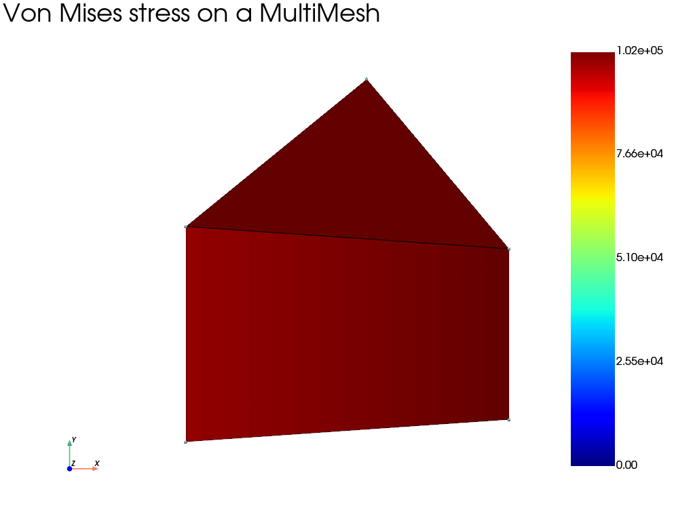

Note
Go to the end to download the full example code.
Analysis and visualization of a multi-mesh model
This example combines quadrilateral and triangular elements that share the same node array. Each element block has its own assembly, while their sum is used to solve a single mechanical problem.
Results requested from the assembly sum are stored in a
fedoo.MultiMesh. Fedoo can therefore visualize all element blocks
directly with one fedoo.DataSet.plot() call.
import fedoo as fd
import numpy as np
Build a mesh containing different element types
A MultiMesh owns one common node array and an ordered collection of
element blocks. Named entries make each submesh easy to retrieve later. The
tuple associated with each name contains its element type and connectivity.
nodes = np.array(
[
[0.0, 0.0],
[1.0, 0.0],
[0.0, 1.0],
[1.0, 1.0],
[0.5, 1.866],
]
)
mesh = fd.MultiMesh(
nodes,
{
"quadrilateral": ("quad4", np.array([[0, 1, 3, 2]])),
"triangle": ("tri3", np.array([[2, 3, 4]])),
},
node_sets={"left": np.array([0, 2]), "right": np.array([1, 3])},
name="mixed_mesh",
)
# Define equations as usual (constitutivelaw + weakform)
fd.ModelingSpace("2Dstress")
material = fd.constitutivelaw.ElasticIsotrop(2e5, 0.3)
wf = fd.weakform.StressEquilibrium(material)
# Create a global assembly
# Assemblies are created on the individual element blocks and then combined
# into the assembly used by the problem.
assembly1 = fd.Assembly.create(wf, mesh["quadrilateral"])
assembly2 = fd.Assembly.create(wf, mesh["triangle"])
assembly = assembly1 + assembly2
# Define a new static problem
pb = fd.problem.Linear(assembly)
# Clamp the left side and prescribe a horizontal displacement on the right.
pb.bc.add("Dirichlet", mesh.node_sets["left"], "Disp", 0)
pb.bc.add("Dirichlet", mesh.node_sets["right"], "DispX", 0.5)
# Solve problem
pb.solve()
Extract and plot multi-mesh results
get_results collects the fields from both elementary assemblies. The
resulting dataset retains the quadrilateral and triangular submeshes and
their element data independently. Nevertheless, the complete model can be
drawn directly with the usual Fedoo plotting function.
results = pb.get_results(["Stress", "Disp", "Strain"])
plotter = results.plot(
"Stress",
component="vm",
data_type="Node",
show=False,
show_edges=True,
show_nodes=True,
title="Von Mises stress on a MultiMesh",
)
plotter.show()

Total running time of the script: (0 minutes 0.201 seconds)